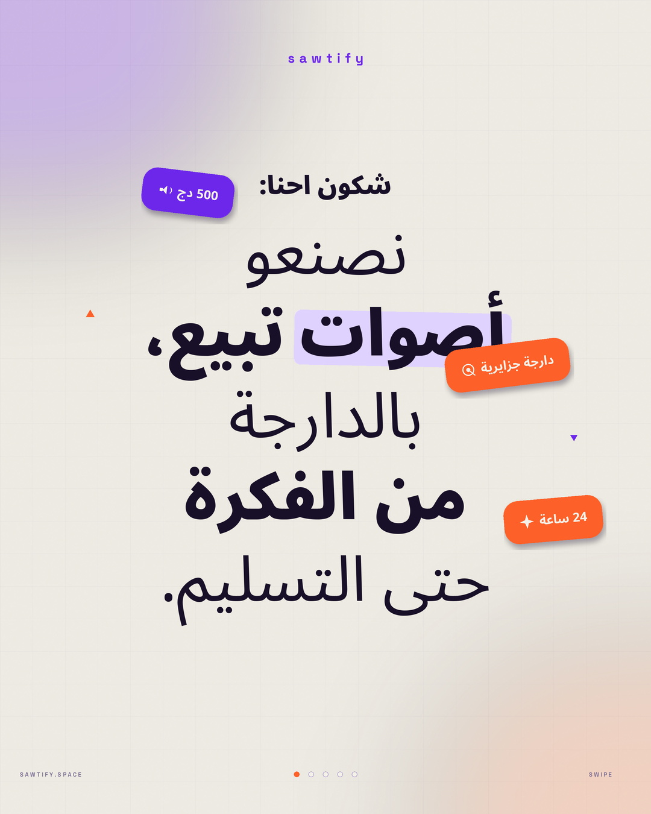
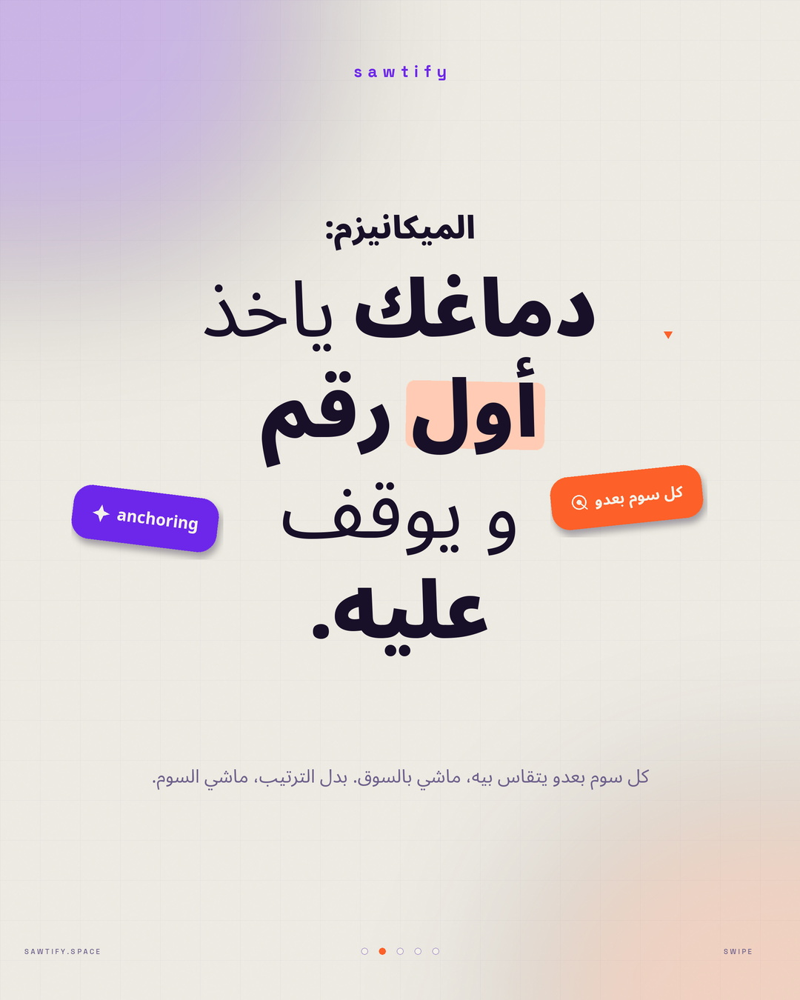
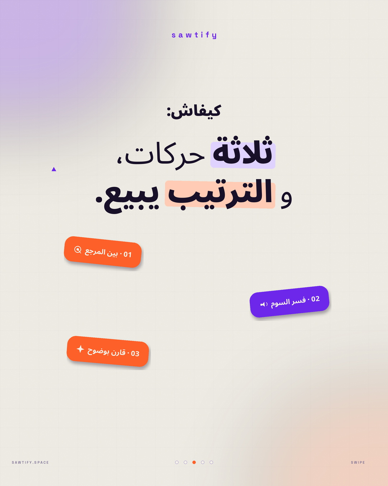
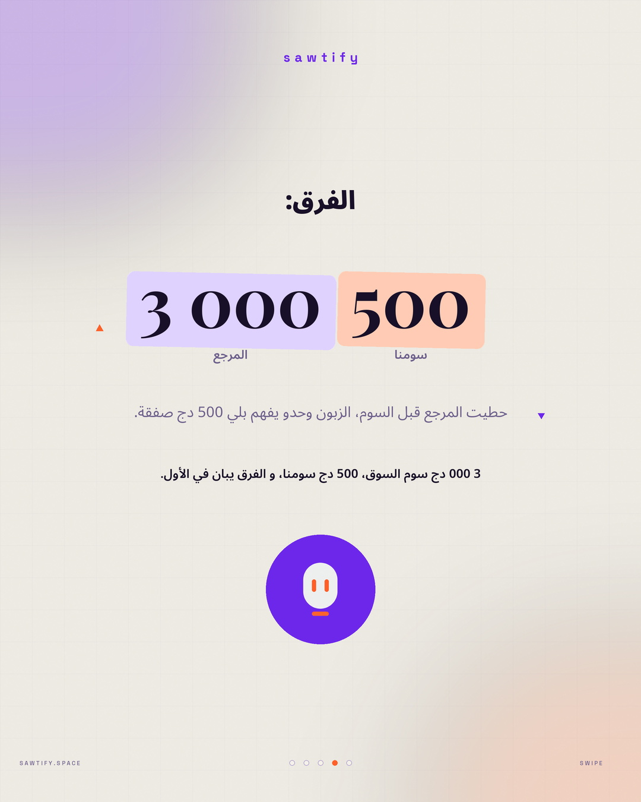
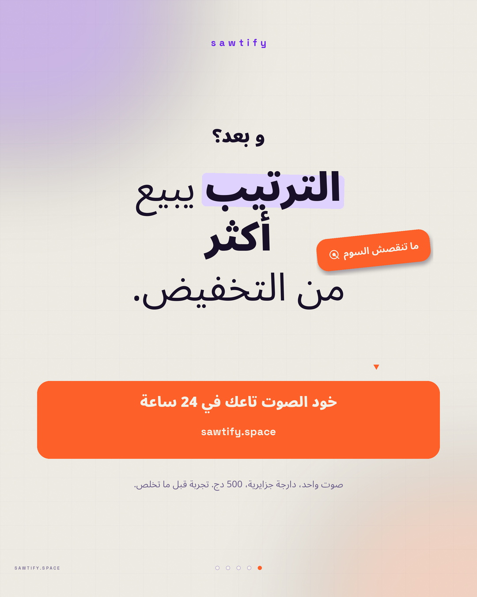

publication 01 شكون احنا — qui on est
Reproduction du poster de référence : ligne d'attaque, bloc de titre Regular/Black, un mot surligné, stickers inclinés à icônes, triangles de repère. Logo texte centré en haut.




